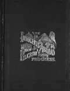
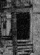
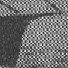
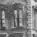
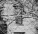

Innocents Abroad
1869

picture courtesy of "Mark Twain in His Times"
|  | Virginia City, NV (source of inspiration) "Shortly came to old Khan & in it examined the arched pit called Joseph's Well, where his brethren threw him. Then over a horrible rocky, barren desert (like Nevada)." journal entry, 9.19.1867, Sea of Galilee, as quoted in Mark Twain's Notebooks and Journals, Vol. 1 |
 |
Quaker
City (source of inspiration and site of actual writing) "We decided that Gibraltar & San Roque were all of Spain that we wanted to see at present & are glad we came here among the Africans, Moors, Arabs, & Bedouins of the desert...This is the infernalist hive of infernally costumed barbarians I have ever come across yet." letter to Jane Lampton Clemens and Family, 6.21.1867-7.5.1867, SS Quaker City, as quoted in Mark Twain's Letters, Vol. 2 "We tired ourselves out here [Genoa, Italy] in this curious old city of palaces yesterday & shall again today...The city has 120,000 inhabitants & 2/3 of them are women & the most beautiful one can imagine. And they are the most tastefully dressed and the most graceful. We sat in a great gas-lit public grove or garden till 10 last night, where they were crowded together drinking wine & eating ices, & it seems to me that it would be good to die & go there. These people think a good deal of Columbus now, but they didn't formerly." letter to Jane Lampton Clemens and Family, 7.15.1867, Genoa, Italy, as quoted in Mark Twain's Letters, Vol. 2 "Italy is a beautiful land, & its daughters are as fair as the moon that holds it silvery course above their heads & its traditions are rich with the poetry and romance of the old crusading days,--happy days! glorious days but destined never to return! I like Italy." letter to Frank Fuller, 8.7.1867, Naples, Italy, as quoted in Mark Twain's Letters, Vol. 2 "They said the Emperor of Russia was at Yalta, 30 miles or 40 away, & urged us to go there with the ship & visit him--promised us a cordial welcome...The whole tribe turned out to receive our party...they all talk English & they were all very neatly but very plainly dressed. You all dress a great deal finer than they were dressed. The Emperor & his family threw off all reserve & showed us all over the palace themselves...I had been appointed chairman of a comittee to draught an address to the Emperor on behalf of the passengers...'We are a handful of private citizens of the United States, traveling simply for recreation, & unostentatiously..." letter to Jane Lampton Clemens and Family, 8.26.1867, Yalta, Russia, as quoted in Mark Twain's Letters, Vol. 2 "You cannot conceive of anything so beautiful as Constantinople, viewed from the Golden Horn or the Bosporous. I think it must be the handsomest city in the world." letter to Jane Lampton Clemens and Family, 9.1-2.1867, Constantinople, Turkey, as quoted in Mark Twain's Letters, Vol. 2 "We are here [the U.S. Consul's Office in Beirut] making a contract with a dragoman...We shall be in the saddle three weeks--we have horses, tents, provisions, arms, a dragoman & 2 other servants, & we pay five dollars a day apiece in gold." letter to Jane Lampton Clemens and Family, 9.10.1867, Beirut, Syria, as quoted in Mark Twain's Letters, Vol. 2 "Mr. Esais--Fix up the little Bible I selected...the one that has backs made of Balsam-wood from the Jordan, oak from Abraham's tree at Hebron, olive-wood from the Mount of Olives...Put 'Jerusalem' around on it loose." letter to Mr. Esais, 9.24.1867, Jerusalem, Syria, as quoted in Mark Twain's Letters, Vol. 2 "Dear Folks--The Quaker City arrived at 10 this morning...I have been bumming around the newspaper offices all day...I sat down in one of the editorial rooms & wrote a newspaper article that will make the Quakers get up & howl in the morning." letter to Jane Lampton Clemens and Family, 11.20.1867, New York, New York, as quoted in Mark Twain's Letters, Vol. 2 |
 |
San Francisco, CA (site of actual writing) "I wrote The Innocents Abroad in the months of March and April, 1868, in San Francisco." Autobiography, 163 "O, Geeminy! [That stands for a sigh.] I shall get the Sphynx & the rest of Egypt off my mind to-day, & tomorrow set sail from Alexandria, homeward bound! You cannot imagine what a broader world of pleasant significance is in those words to me, now, voyaging drearily over accumulating reams of paper, than they bore to my mind when the Quaker City turned her bows westward...Cuss the cussed book, anyhow." letter to Mary Mason Fairbanks, 6.17.1868, San Francisco, as quoted in Mark Twain's Letters, Vol. 2 |
| Washington, DC (site of actual writing) "Out of a mass of letters not yet mailed I send you three. The letters seem to be about alike, but I take these because one blackguards Palenstine scenery, another mentions Nazareth which is a town widely known in America, the third gently touches the stupid gang of scholastic asses who go browsing through the Holy Land reducing miracles to purely natural occurances--& all three tickle my pilgrims on the raw." letter to John Russell Young, 11.24.1867, Washington, DC, as quoted in Mark Twain's Letters, Vol. 2 "When these letters [to the Alta California while aboard the Quaker City excursion] were written my impressions were fresh, but now they have lost their freshness; they were warm then--they are cold, now. I could strike out certain letters, & write new ones wherewith to supply their places. If you think such a book would suit your purpose, please drop me a line." letter to Elisha Bliss, Jr., 2.12.1867, Washington, DC, as quoted in Mark Twain's Letters, Vol. 2 "I am writing a prodigious 600-page book, now--a seductive book with pictures on every page--for the great subscription Publishing Co., of Hartford, who publish for Greely & I exclusively--but I shall have this book done before autumn." letter to Anson Burlingame, 2.19.1868, Washington, DC, as quoted in Mark Twain's Letters, Vol. 2 |
|
 |
Langdon Home, Elmira, NY (site of editing) "In the beginning of our engagement the proofs of my first book, The Innocents Abroad, began to arrive and she [Livy-then at her home in Elmira] read them with me. She also edited them." Autobiography, 207 |